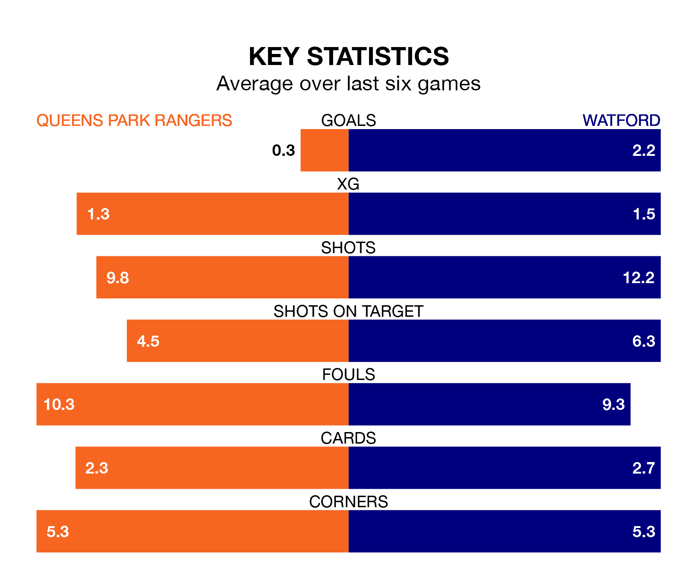

Queens Park Rangers are on a terrible run ahead of hosting Watford at Loftus Road on Sunday, with just two points collected from their last six games.
QPR have picked up two draws and four losses in their last six Championship games, and face a Hornets side whose last six games have brought two wins and two draws.
QPR are 23rd in the table after 26 games, of which they have won five and drawn six, earning 21 points.
Watford are 13 places ahead of Rangers in 10th, with nine wins and nine draws putting them on 36 points.
With 21 goals in 26 games so far this season, the hosts are the league's joint-second-lowest scorers with 0.8 goals per game. And they are conceding at an average rate, letting in 37 goals at a rate of 1.4 per game.
The Hornets, meanwhile, are above average scorers, with 1.6 goals per game, compared to a league average of 1.4. They have conceded 1.4 goals per game.
In the last 10 years, QPR and Watford have played each other on seven occasions. QPR won four of them, Watford two, and they drew once.
On average, QPR scored 1.3 goals and the Hornets 1.4 in those matches.
Their last meeting was on August 5, when Watford won 4-0 at home.
In Mileta Rajovic, the away team have one of the league's most on-form strikers so far this season. He has notched eight goals in 23 appearances, to sit ninth in the scoring charts.
QPR's top scorers, with three goals each, are Chris Willock, Lyndon Dykes and Kenneth Paal.
QPR's last match was on January 1, a 2-1 loss against Cardiff City, with Paul Smyth getting the goal for QPR.
Watford drew 3-3 with Plymouth Argyle last time out, also on January 1, with Edo Kayembe, Ismael Koné and Ryan Andrews on the scoresheet.
Updated: 11:29, 08/01/24